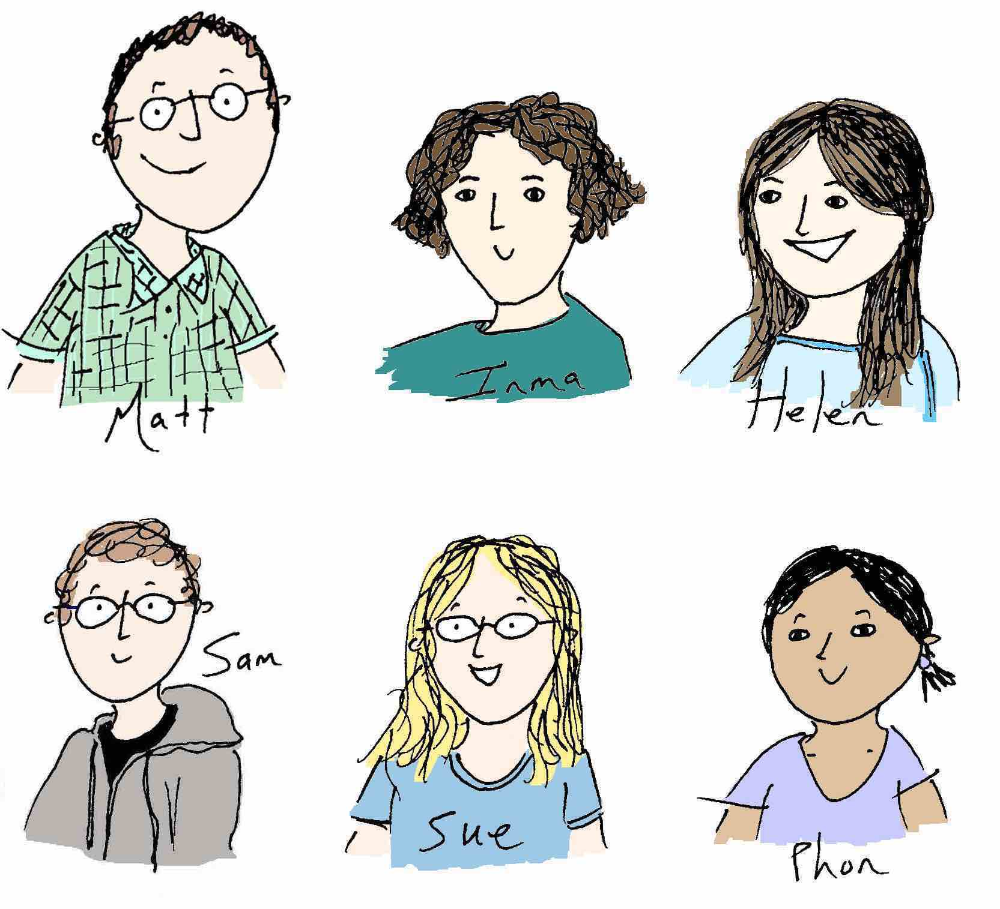

<div class="row">
	<div class="8u">
		<section class="specialleft">
			<h2>The Moscou group</h2>
			<p>The Moscou group is located at <a href="www.tsl.ac.uk">The Sainsbury Laboratory</a> in Norwich, United Kingdom. In 2010, the group was initially within the <a href="http://www.tsl.ac.uk/groups/twoblades/">2Blades Group</a>. After an expansion in our research programme, the group became independent in 2014. Our initial research focus was on identifying novel sources of durable disease resistance to wheat stripe rust (<i>Puccinia striiformis</i> f. sp. <i>tritici</i>) and wheat stem rust (<i>Puccinia graminis</i> f. sp. <i>tritici</i>). Our research has now expanded to several themes including the genetic architecture of nonhost resistance in grasses to fungal pathogens, multiple pathogen recognition of <i>R</i> genes, molecular tradeoffs in immunity to biotrophs and necrotrophs, suppression of resistance in polyploid genomes, genomics of immunity in cereals, and pre-zygotic and post-zygotic hybridization barriers and their relationship to immunity.</p>
		</section>
	</div>
	<div class="4u">
		<section class="special">
			<a class="image fit"></a>
		</section>
	</div>
</div>

{{ content }}
